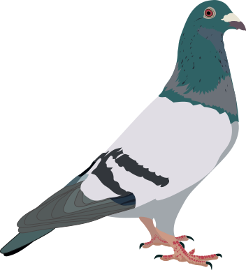

<!-- <a href="{{ "/" | relative_url }}">{{ site.theme_config.back_home_text }}</a> -- This is the original line from no-style-please, not using -->

<!-- This is my pigeon-plus-link backlink top matter -->
  
  <span style="vertical-align: middle;"><b><font size="+2"><a href="https://bysoundalone.net/">bysoundalone.net</a><b></font></span>


